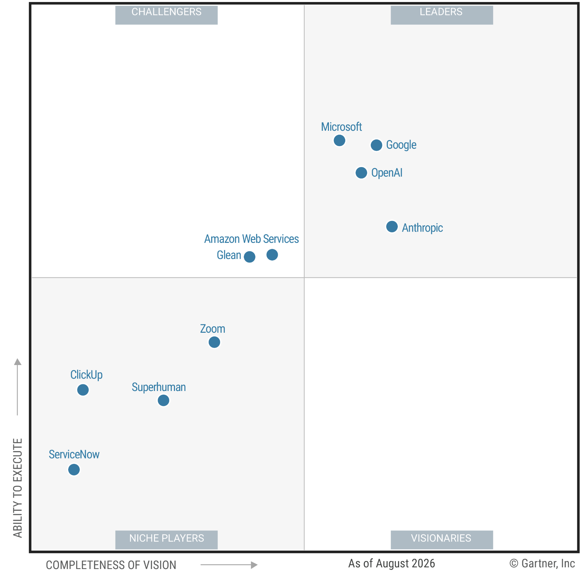

From personas to production · Why Google
Google Cloud is the only provider to offer first-party solutions across the entire AI stack.
And independent analysts agree: Google is a Leader in the 2026 Gartner® Magic Quadrant™ for Enterprise AI Assistants.
Six layers · all first-party
Leader · 2026 Gartner® Magic Quadrant™

Gartner, Magic Quadrant for Enterprise AI Assistants, Max Goss, Jason Wong, Olga Martí, Justin Tung, Cory Decker, 2 September 2026.
Gartner does not endorse any vendor, product or service depicted in its research publications, and does not advise technology users to select only those vendors with the highest ratings or other designation. Gartner research publications consist of the opinions of Gartner's research organization and should not be construed as statements of fact. Gartner disclaims all warranties, expressed or implied, with respect to this research, including any warranties of merchantability or fitness for a particular purpose. This graphic was published by Gartner, Inc. as part of a larger research document and should be evaluated in the context of the entire document. The Gartner document is available upon request from Google. GARTNER is a registered trademark and service mark of Gartner, Inc. and/or its affiliates in the U.S. and internationally, and MAGIC QUADRANT is a registered trademark of Gartner, Inc. and/or its affiliates and are used herein with permission. All rights reserved.